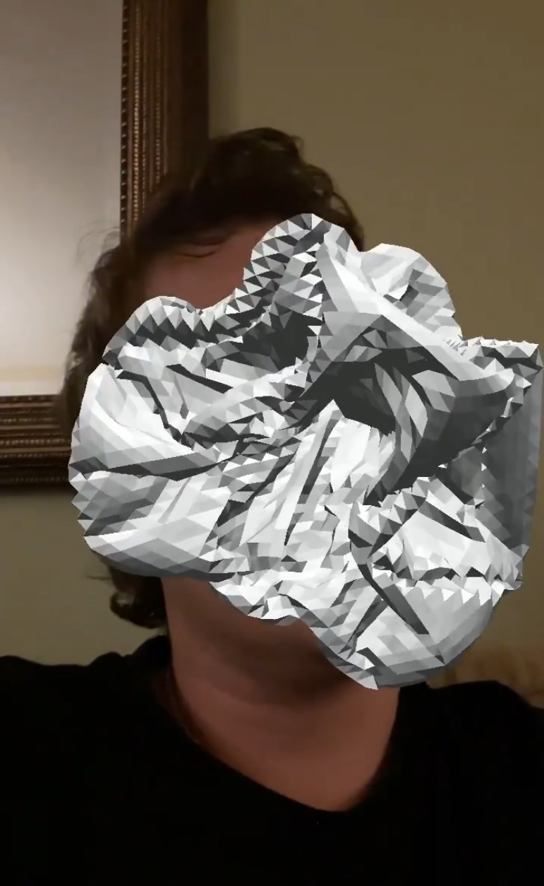
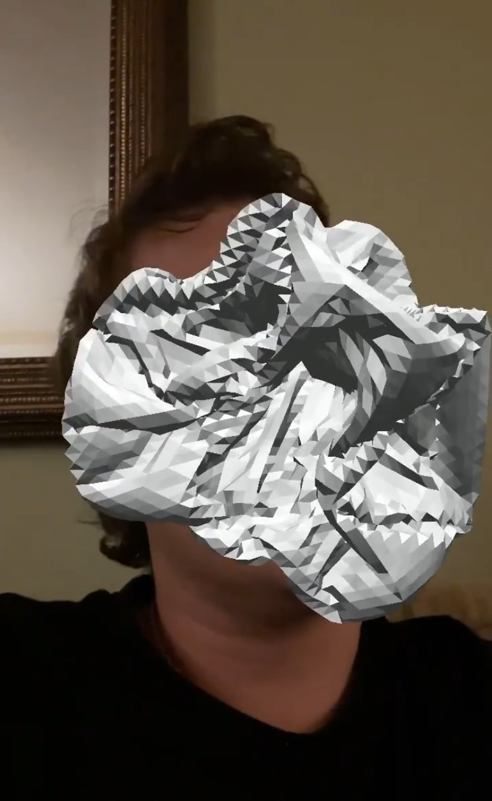
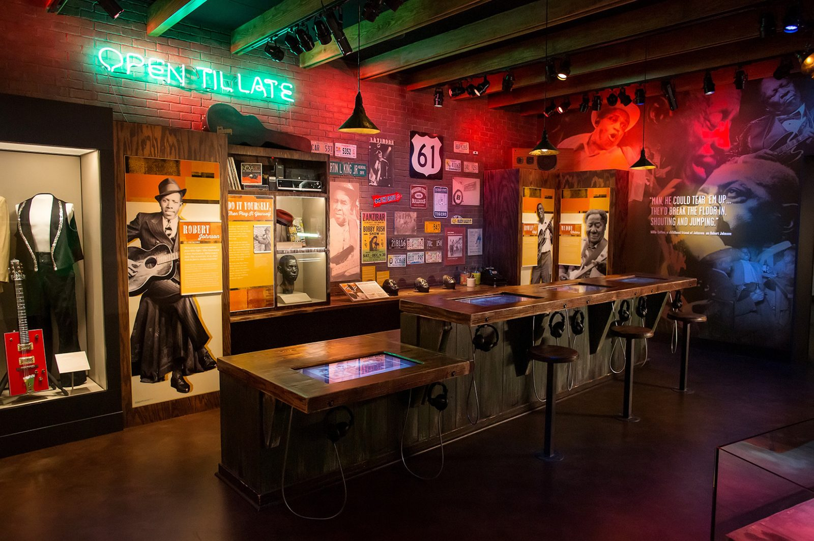
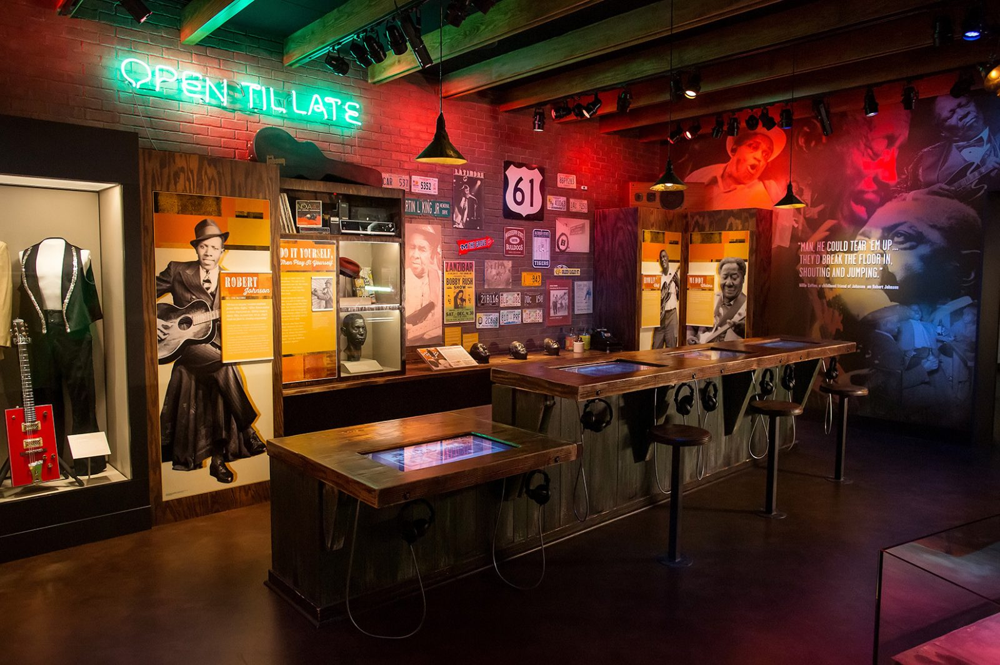

VFX Artist
Resume

Hello! My name is Patrick and I've been making videogames and art in environments like Unity, Processing, and Javascript since 2013.

I most recently worked for Osmo as a Technical Artist for their Reading Adventure game for the iPad and Android tablets, where I worked on editing special effects, animation timelines, and computer vision tagging in Unity.

For example: I worked on this cloudy, moving border effect which uses a transparent texture on a 3D shape that then gets moved in a loop by a script adjusting the UV position of the texture.
---------------------------------------------------------------------------
Another project I recently worked on an interactive VR film called Mountains After Mountains with filmmakers Susana Ruiz and Huy Truong centered on a monologue written and performed by Amy Mihyang Ginther. The experience includes 3D scans and volumetic recordings of the monologue mixed in with colorful, cartoony environments. The project was developed in Unity using the Oculus Rift and was designed to be screened at film festivals.

I collaborated with a 2D artist on building up a 3D environment of 2D sprites like this bunny, which I programmed to hop away from the player and around the space using a combination of C# scripts, sprite animation, and the Animator tool in Unity.

The central part of the experience is this 3D scanned room where a 3D volumetric video of Amy performing the monologue is playing. While she is speaking, these bunny particles start to multiply and fill the space via a timer in a script which is tuned to fill the room completely before the next sequence, where the walls dissolve and the player and bunnies are released back out into the open space.
---------------------------------------------------------------------------
While working at Gallgher & Associates I collaborated with designers to imagine possibilities for deploying emerging technology in museum settings, primarily prototyping on the Hololens AR headset and the (sadly already defunct) Google Tango AR tablet. Some of these experiments included feeding and petting a dinosaur in VR, an interactive AR tour of our office, a hypothetical museum object overlay interface, and artistic experiments with a sculptor.
---------------------------------------------------------------------------
I've been working in Unity since 2014 on making experimental games for art gallery settings and distributing them online.
In Shtrinkl I collaborated with a musician to create a game about playing with strings, using a rope simulation tool in Unity to simulate the experience of plucking a string instrument while playing creatively with the potential of instrument configurations that couldn't exist in real space.
PS is what I think of as a playful essay, where I paired a series of experiments with the particle system tool in Unity with a essay that gets disrupted by parsing the text from a JSON file in playful ways.
CLOTH^3 is my MFA thesis exhibition which was a 2 channel videogame installation, a table of 64 3D prints, and a giant crochet cube. The game consists of a series of levels that switch between playing with the solid shapes that became the 3D prints and a digital version of the crochet cube, using a cloth simulation tool in Unity. I also generated the music by programming a synth plugin from C# scripts.
Site holes is a virtual reality installation where I created a series of virtual scenes of either abstract shapes related to holes or interesting cultural references to holes. In the installation I had the view from the headset projected onto a screen in front of the play space with holes punched into it, to create a hybrid IRL image of the player with the scene they were playing. A further complication of this image came from a webcam which was also pointed at the screen and sometimes was activated in the VR scene.
---------------------------------------------------------------------------
These are some Instagram filters I made in Spark AR, connected to my MFA thesis piece "A few ways of being a cube".

 

---------------------------------------------------------------------------
At Gallagher & Associates I worked with UX/UI, exhibit, and content designers to build touch screen interactives for the Illinois Holocaust Museum in Skokie, Illinois and Mississippi Arts + Entertainment Experience in Meridian, Mississippi. These were built using HTML5/SASS, React.js, and pixi.js.
 


---------------------------------------------------------------------------
In my time working at Indiana University in the Hamilton Luger School of Global and International Studies I had the opportunity to create smaller games and prototypes focused on outreach for some of the language programs.